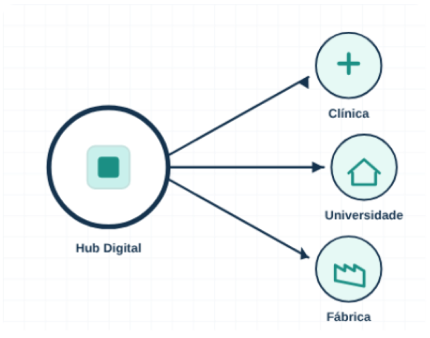

Conectando próteses
3D a quem precisa
Hub digital que conecta a demanda clínica da AACD à capacidade produtiva de FabLabs, universidades e fábricas do Grande ABC, com cadastro das unidades, sugestão de parceiros e acompanhamento dos pedidos em um só lugar.

Do desafio isolado à
solução distribuída
Hoje o ecossistema de próteses 3D depende de conexões manuais. O Hub centraliza e automatiza essa ponte.
Demanda clínica
A AACD registra a necessidade de próteses e órteses e envia o link do arquivo de fatiamento.
Capacidade ociosa
FabLabs universitários, voluntários técnicos e empresas disponibilizam suas impressoras 3D para fins sociais.
Sugestão de parceiros
O sistema mostra as unidades homologadas que têm o material do pedido, começando pelas da mesma cidade.
Do pedido à entrega, em quatro passos
Cada etapa fica registrada na plataforma, para que todos os envolvidos acompanhem o andamento.
Nova demanda
A AACD cadastra o pedido com tipo de prótese, urgência, material, cidade e o link do arquivo de fatiamento.
Homologação
A equipe da Mauá cadastra e homologa cada unidade parceira. Só unidades homologadas recebem pedidos.
Sugestão de parceiros
A AACD escolhe entre as unidades homologadas que têm o material, com as da mesma cidade primeiro.
Produção e entrega
A unidade imprime e envia; a AACD valida, aprova ou reprova com motivo e registra a entrega. Tudo fica no histórico.
Microfábricas distribuídas
pelo Grande ABC
Em parceria com a União dos Reitores, a produção deixa de depender de um único centro.
- Instituto Mauá (Hub)
- Santo André
- São Bernardo do Campo
- São Caetano do Sul
- Diadema
- Mauá
- Ribeirão Pires
- Rio Grande da Serra
Dados de saúde exigem
cuidado desde o desenho
Próteses envolvem dados de saúde, que são dados pessoais sensíveis. Por isso o Hub não guarda nenhum dado pessoal de paciente. A proteção faz parte da arquitetura da plataforma.
Anonimização de pacientes
Pedidos identificam o paciente apenas por um código interno. Nome e dados pessoais não são guardados na plataforma.
Acesso por perfil
AACD, unidades parceiras e administração enxergam apenas o necessário para o seu papel: demanda clínica de um lado, especificações técnicas de produção do outro.
Histórico e rastreabilidade
Toda movimentação de um pedido fica registrada com data, hora e responsável, formando uma trilha de auditoria.
Conformidade com a LGPD
O tratamento de dados segue a Lei Geral de Proteção de Dados (Lei nº 13.709/2018), com finalidade definida e coleta mínima.
Em definição: as bases legais, o termo de consentimento e a política de retenção de dados serão validados em conjunto com a AACD e a assessoria jurídica antes da operação.